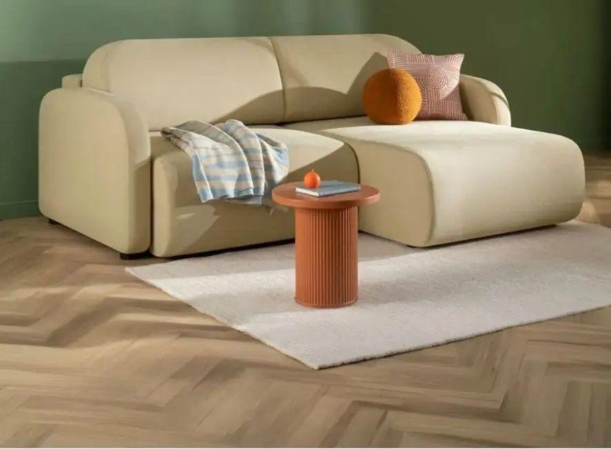
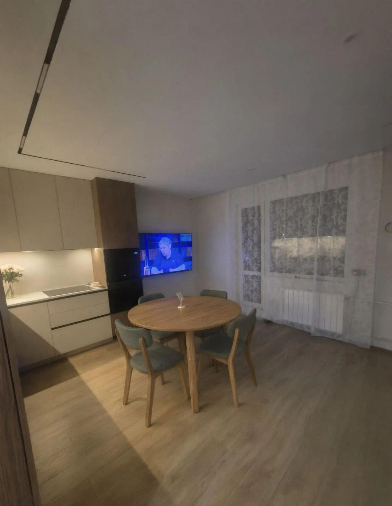
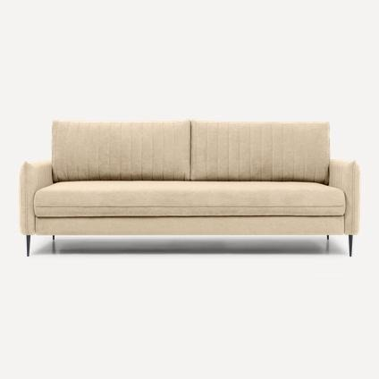
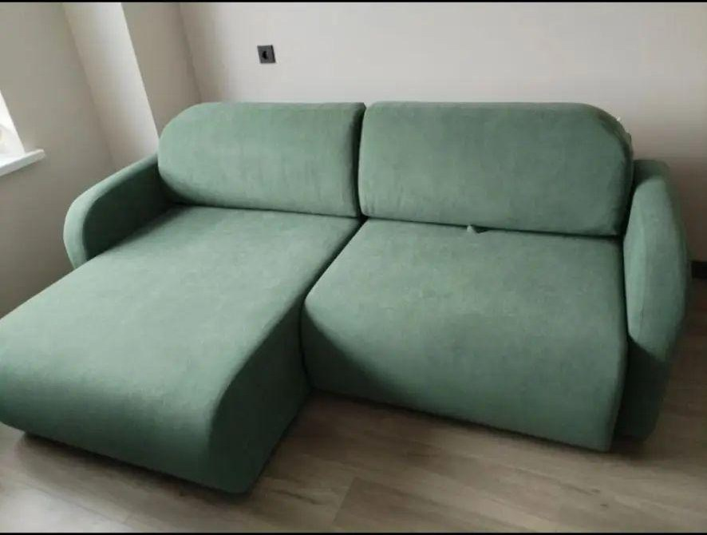

Берём
Клаймар, угол
Песочный велюр. Сон нужен. 231 × 161 × 90 см.

НомерКухня
Ольга Сергеевна и Юрий Сергеевич
divan.ru · велюр песочный · еврокнижка
02 · Как есть
Фасады, стол, стулья, тюль, батарея и окно остаются. Дивана на этом кадре нет.
Исходное фото может быть помечено как ИИ. Размеры комнаты из кадра не берём.
Десять секунд. Шаг, ткань, дальняя улица. Звук выключается кнопкой.
04 · Три кандидата

Песочный велюр. Сон нужен. 231 × 161 × 90 см.

Тонкие ножки. Только если спать на диване не нужно.

Шалфей уже на стульях. Второй зелёный спорит с ними.
05 · Почему Клаймар
divan.ru. Перед оплатой цену подтвердить на сайте. Это не финальный счёт.
06 · Почему не зелёный
Стулья держат единственный холодный акцент. Зелёный угол рядом с ними двоит цвет и сажает кухню в один тон.
Песок Клаймара остаётся с дубом и фасадами. Шалфей остаётся на стульях.
07 · Посадка
Лицом к столу. Оттоманка внутрь. Штора, батарея и лоджия свободны.
Схема, не обмер. Кадр показывает место, не снятые размеры.
08 · Цифры и риски
Стену и проход из фото не считать. Рулетка решает, влезет ли угол.
Просвет 2 см. Под диваном убирать только снаружи.
Кухня. Пятна видны. Чехол несъёмный.
Около 128 кг. Проём от 80 см. Уточнить этаж и лифт.
Велюр держит кухонный запах. Это не гостиная вдали от готовки.
Правая стена короче 250 см или проход до стула меньше 70 см: прямой Клаймар в том же песке, глубина около 117 см. Не путать с прямым бежевым на тонких ножках.
09 · Решение
Ориентир около 69 990 ₽. Не финальный счёт. Гарантия 18 месяцев. divan.ru.